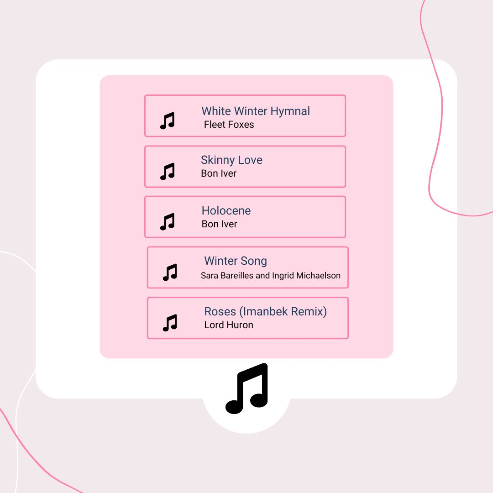

Winter is a time that people often associate with the cold and sadness. Without even trying, people’s minds often view winter as sad. This leads to many people feeling a sense of seasonal depression, leading them to feel less energetic.
Yet, many find comfort in music, in this time, specifically soft somber flowing songs. Many of the songs that are most popular during these months are songs that express a feeling of longing. The reason that so many people enjoy this slow emotional type of music is because artists themselves use music as an outlet when they are feeling down. Because of this, many people enjoy listening to music that they can relate to.
Out of my top 5 most listened to songs for 2023, the song that would fall under the category of a “Winter” song would be Cardigan by Taylor Swift.
The relatability of the song! Taylor Swift makes sure to keep her lyrics relatable to her listeners. By keeping them somewhat open ended, her listeners are able to tie their own situation to her song.
Take a look below!
The tempo!
The overall tempo of the song is considered to be moderate, giving listeners a mellow vibe. The song is very slow and gentle with the presence of pianos and low notes. This song is perfect for the winter due to the sound and lyric elements that evoke heavy themes of longing, something that many tend to immerse themselves in during the winter months.
Other songs that have popped up in my recommended that are perfect for the Winter:
These songs provide the exact level of energy that is perfect for a cozy winter day.
On the next page you will get an insight into what makes a "Summer" song and how it is different than a "Winter" song!